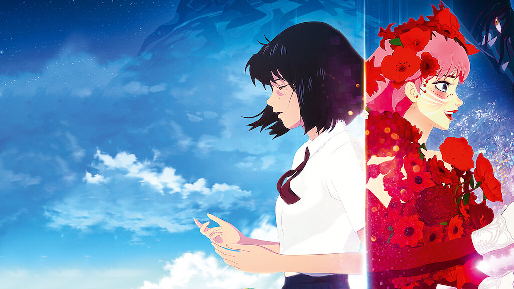

☆Gênero: Romance/ Reality Show/ Musical
☆lançamento: 27/01/2022
☆diretor(a): Mamoru Hosoda
☆Studio: Studio Chizu,
☆classificação indicativa: +14
☆Duração: 2h 02mn
avaliação:★★★★★ (4,9)
Sinopse
Uma adolescente se torna uma cantora mundialmente famosa após entrar em um fantástico mundo virtual. Lá ela encontra uma criatura misteriosa e embarca em uma jornada para descobrir sua identidade.